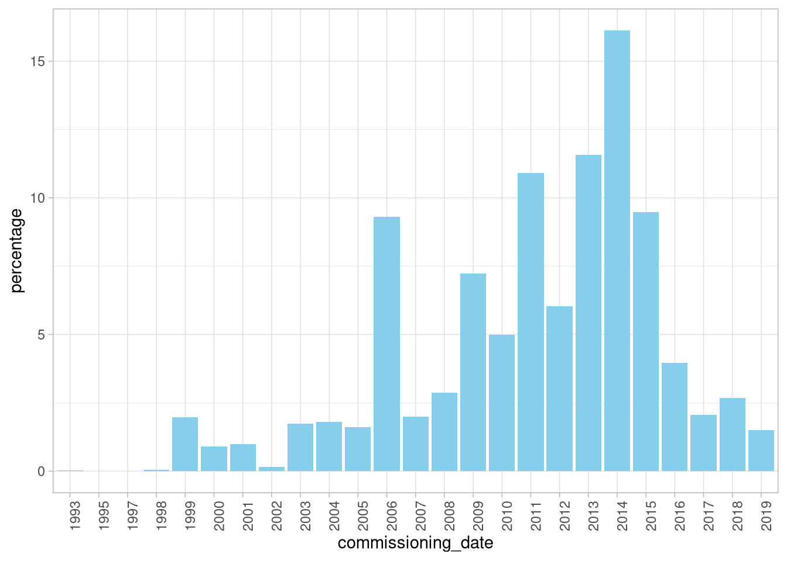
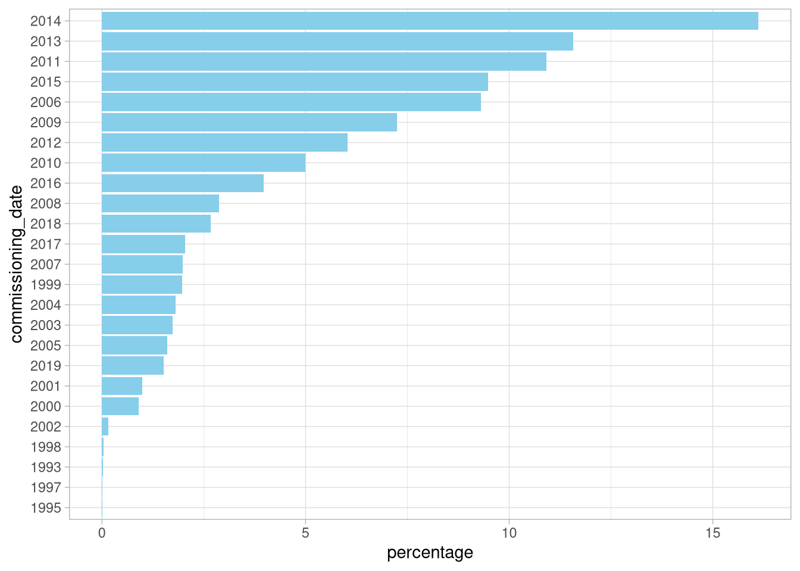
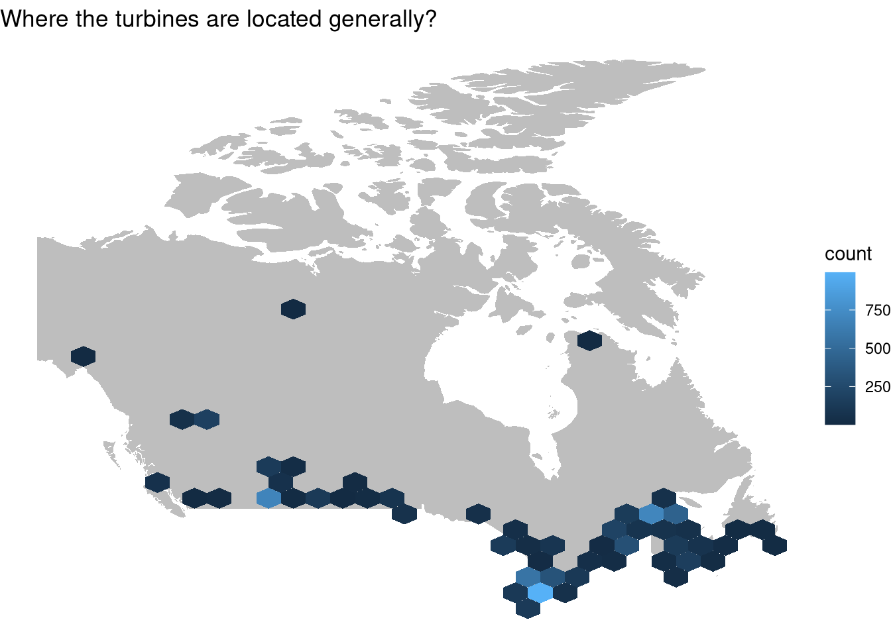
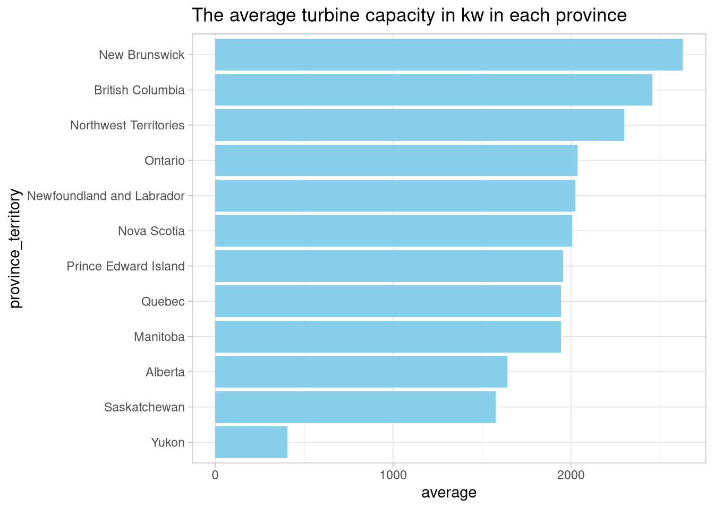
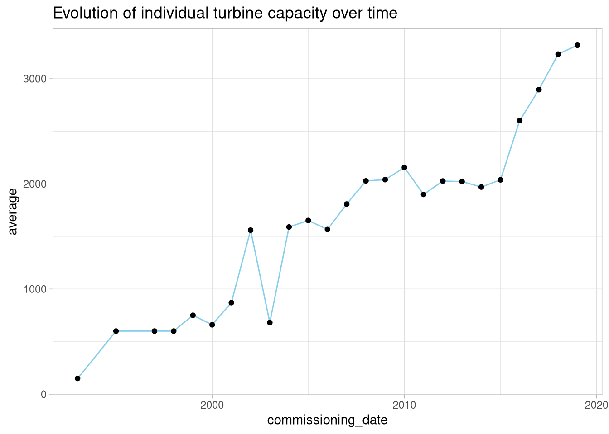
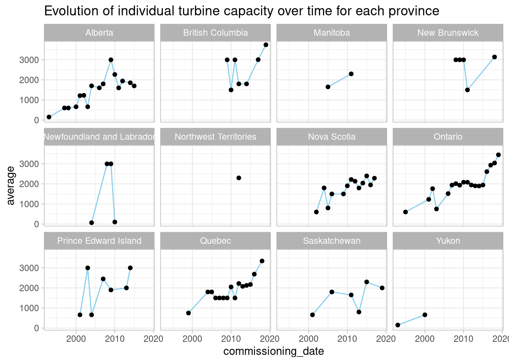
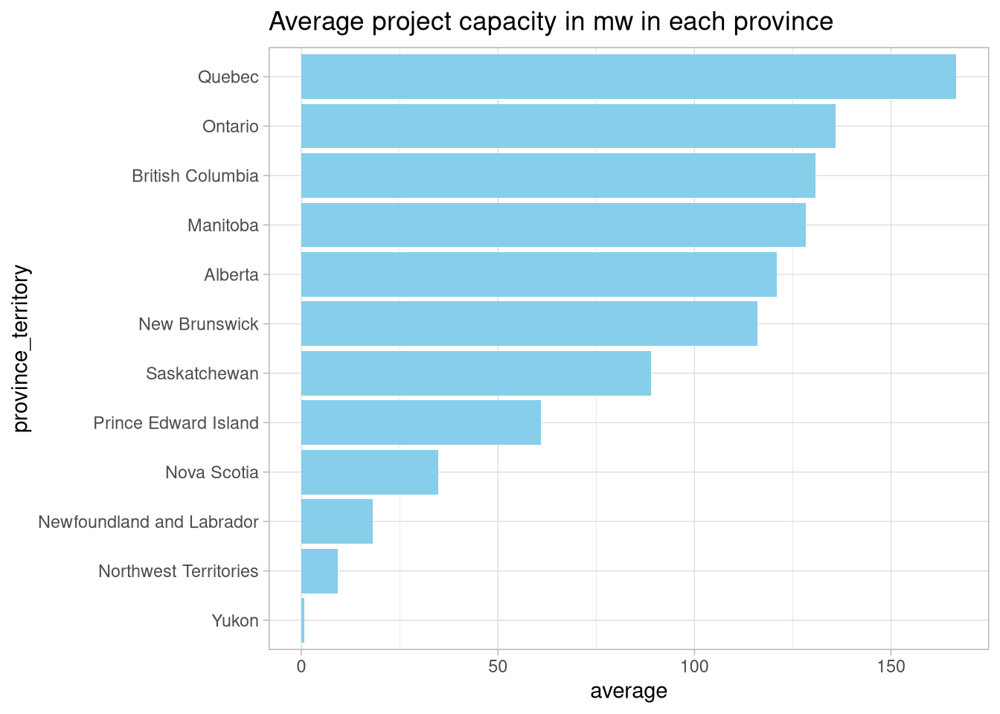
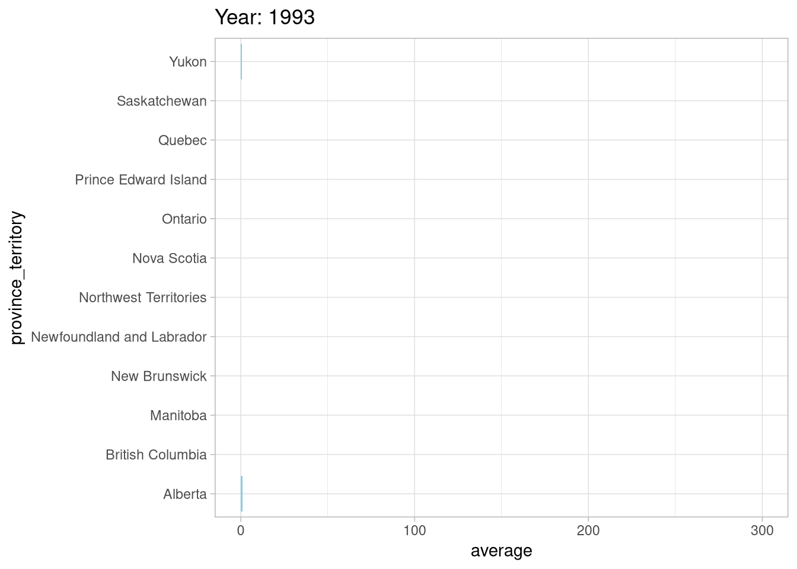
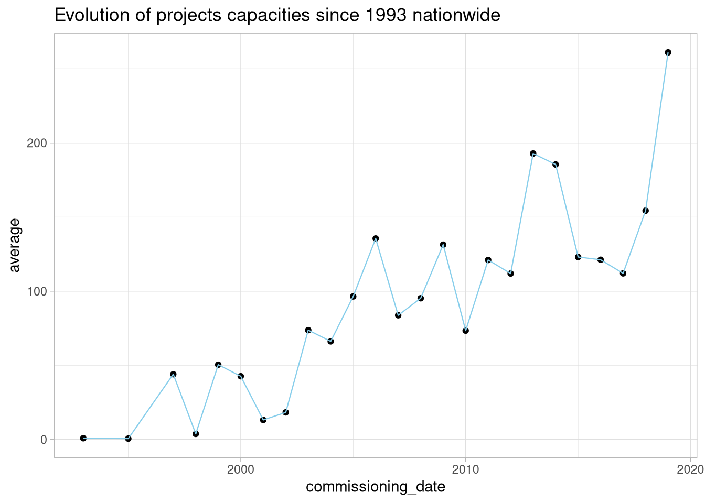

In this post I will be treating the Canadian wind turbines dataset. you can check it out here
This data set is part of the Tidytuesday project, I love the project, I love the data published in it.
The best way to start all this, is to import tidyverse first thing, and just use the data from an online source just like in the github page.
library(tidyverse)
wind_turbine <- read_csv('https://raw.githubusercontent.com/rfordatascience/tidytuesday/master/data/2020/2020-10-27/wind-turbine.csv')
theme_set(theme_light())wind_turbine %>% glimpse()## Rows: 6,698
## Columns: 15
## $ objectid <dbl> 1, 2, 3, 4, 5, 6, 7, 8, 9, 10, 11, 12, 13,…
## $ province_territory <chr> "Alberta", "Alberta", "Alberta", "Alberta"…
## $ project_name <chr> "Optimist Wind Energy", "Castle River Wind…
## $ total_project_capacity_mw <dbl> 0.90, 44.00, 3.78, 3.78, 3.78, 3.78, 19.50…
## $ turbine_identifier <chr> "OWE1", "CRW1", "WWT1", "WWT2", "WWT3", "W…
## $ turbine_number_in_project <chr> "1/2", "1/60", "1/6", "2/6", "3/6", "4/6",…
## $ turbine_rated_capacity_k_w <dbl> 150, 600, 600, 600, 600, 660, 1300, 1300, …
## $ rotor_diameter_m <dbl> 23, 44, 44, 44, 44, 47, 60, 60, 60, 60, 60…
## $ hub_height_m <dbl> 30, 40, 50, 50, 50, 50, 46, 46, 46, 46, 46…
## $ manufacturer <chr> "Bonus", "Vestas", "Vestas", "Vestas", "Ve…
## $ model <chr> "AN 150/30", "V44/600", "V44/600", "V44/60…
## $ commissioning_date <chr> "1993", "1997", "1998", "1998", "1998", "2…
## $ latitude <dbl> 49.52535, 49.51264, 49.23307, 49.23303, 49…
## $ longitude <dbl> -114.0548, -114.0357, -113.6549, -113.6302…
## $ notes <chr> NA, NA, NA, NA, NA, NA, NA, NA, NA, NA, NA…Now what kind of insights can we derive from this data? I am not really sure, nevertheless, the first that we need to do is try to understand what we have here. Since we have spatial data its an opportunity to work with maps then, anyhow, the more we dig the more we figure stuff to do, either because they are simply cool, or because they ease our work flow.
So let’s see where these turbines are concentrated in:
wind_turbine %>%
count(province_territory, sort = T) %>%
mutate(percentage = round((n/6698)*100, 2),
cumulative = cumsum(percentage)) ## # A tibble: 12 x 4
## province_territory n percentage cumulative
## <chr> <int> <dbl> <dbl>
## 1 Ontario 2663 39.8 39.8
## 2 Quebec 1991 29.7 69.5
## 3 Alberta 900 13.4 82.9
## 4 Nova Scotia 310 4.63 87.6
## 5 British Columbia 292 4.36 91.9
## 6 Saskatchewan 153 2.28 94.2
## 7 Manitoba 133 1.99 96.2
## 8 New Brunswick 119 1.78 98.0
## 9 Prince Edward Island 104 1.55 99.5
## 10 Newfoundland and Labrador 27 0.4 99.9
## 11 Northwest Territories 4 0.06 100.
## 12 Yukon 2 0.03 100.So there you go, 69% of the wind turbines in canada are installed in Ontario and Quebec(82% if we add Alberta). This is an interesting fact, but I think we should look up when did all this started, and how is the turbines service period is distributed.
wind_turbine %>%
count(commissioning_date, sort = T)## # A tibble: 35 x 2
## commissioning_date n
## <chr> <int>
## 1 2014 873
## 2 2015 635
## 3 2013 621
## 4 2011 590
## 5 2009 485
## 6 2006 455
## 7 2012 404
## 8 2010 334
## 9 2016 266
## 10 2014/2015 207
## # … with 25 more rowsApparently there is some year inputs where we don’t have one year alone but rather a two years season; like instead of having 2014, we have 2014/2015 as a year. My take on this will be to keep only the first year of the combinations, since the year column is presented as a text we can do this easily using :
wind_turbine[,12] <- wind_turbine %>%
select(commissioning_date) %>%
sapply(.,str_remove, "/.*") %>%
as.numeric() %>%
as_tibble() The chunck above will fix the date issue directly in the original data column, then we don’t have to change it everytime.
wind_turbine %>%
count(commissioning_date, sort = T) %>%
mutate(percentage = round((n/6698)*100, 2),
commissioning_date = as_factor(commissioning_date)) %>%
ggplot(aes(x = commissioning_date,
y = percentage)) +
geom_col(fill = "skyblue") +
theme(axis.text.x=element_text(angle=90, hjust=1, vjust = 1))
This is the distribution of the percentage of wind turbines commissioned over the time period of the data set(25 years).
We can also do a more pragmatic visualization like the following :
wind_turbine %>%
count(commissioning_date, sort = T) %>%
mutate(percentage = round((n/6698)*100, 2),
commissioning_date = as_factor(commissioning_date)) %>%
mutate(commissioning_date= fct_reorder(commissioning_date, percentage)) %>%
ggplot(aes(x = commissioning_date,
y = percentage)) +
geom_col(fill = "skyblue") +
coord_flip() 
Let’s see what a descriptive summary of this distribution would give us :
wind_turbine %>%
count(commissioning_date, sort = T) %>%
mutate(percentage = round((n/6698)*100, 2),
commissioning_date = as_factor(commissioning_date)) %>%
summary()## commissioning_date n percentage
## 1993 : 1 Min. : 1.0 Min. : 0.010
## 1995 : 1 1st Qu.: 66.0 1st Qu.: 0.990
## 1997 : 1 Median : 133.0 Median : 1.990
## 1998 : 1 Mean : 267.9 Mean : 3.999
## 1999 : 1 3rd Qu.: 404.0 3rd Qu.: 6.030
## 2000 : 1 Max. :1080.0 Max. :16.120
## (Other):19The average turbine commissioning is at 4% every year. Now how do these numbers compare province wise? An animated map will be very useful in this case, and frankly very challenging as well since I have never come across spatial data before, but let’s do it anyway, let’s set the map first:
library(maps)##
## Attaching package: 'maps'## The following object is masked from 'package:purrr':
##
## maplibrary(gganimate)
library(gifski)
canada <- map_data("world", region = "canada")However, a main issue that we need is how did the characteristics of each wind turbine project evolved over the period over which the data is collected. I thought I would use gganimate for this task to see the variation over time and space but it was so useless, its better to get onto this the old way.
canada %>%
ggplot(aes(x = long,
y = lat)) +
geom_polygon(aes(group = group), fill = "grey") +
geom_hex(data = wind_turbine,
aes(x = longitude,
y = latitude)) +
labs(title = "Where the turbines are located generally?") +
theme_void()
Well, there you go guys, geom_hex allows us to have a better view on the intensity of the turbines concentration, especially in the east south part.
I am also intereseted in the capacity of each turbine, a map and a bubble point apporoach resulted in an ugly graph, then again, I used geom_hex
wind_turbine %>%
group_by(province_territory) %>%
summarise(average = mean(turbine_rated_capacity_k_w, na.rm = T)) %>%
mutate(province_territory = fct_reorder(province_territory, average)) %>%
ggplot(aes(x = province_territory,
y = average)) +
geom_col(fill = "skyblue") +
coord_flip() +
labs(title = "The average turbine capacity in kw in each province") ## `summarise()` ungrouping output (override with `.groups` argument)
There has been some 200ich NA’s in the turbine_rated_capacity_k_w variable omitted, so take this table with a grain of salt.
A good idea is to just check the nation wide average of turbine rated capacity and its evoloution over time:
library(lubridate)##
## Attaching package: 'lubridate'## The following objects are masked from 'package:base':
##
## date, intersect, setdiff, unionwind_turbine %>%
group_by(commissioning_date) %>%
summarise(average = mean(turbine_rated_capacity_k_w, na.rm = T)) %>%
ggplot(aes(x = commissioning_date,
y = average)) +
geom_line(color = "skyblue", size = 0.5) +
geom_point() +
labs(title = "Evolution of individual turbine capacity over time") ## `summarise()` ungrouping output (override with `.groups` argument)
############################################################################
############################################################################
# The same thing but faceting over the provinces #
wind_turbine %>%
group_by(commissioning_date, province_territory) %>%
summarise(average = mean(turbine_rated_capacity_k_w, na.rm = T)) %>%
mutate(commissioning_date = year(as.Date(as.character(commissioning_date), format = "%Y"))) %>%
ggplot(aes(x = commissioning_date,
y = average)) +
geom_line(color = "skyblue", size = 0.5) +
geom_point() +
facet_wrap(province_territory~.)+
labs(title = "Evolution of individual turbine capacity over time for each province")## `summarise()` regrouping output by 'commissioning_date' (override with `.groups` argument)## geom_path: Each group consists of only one observation. Do you need to adjust
## the group aesthetic?
These turbines are mainly established under specific projects, a good idea is to understand the characteristics of these projects and how they did evolve over time and where. For example, a province might have one project that produces higher energy than others with more projects with less turbines and less energy output. Its up to us to figure this out. Let’s get back to the data:
Let’s start with the project capacity in mega watts:
wind_turbine %>%
group_by(province_territory) %>%
summarise(average = mean(total_project_capacity_mw)) %>%
mutate(province_territory = fct_reorder(province_territory, average)) %>%
ggplot(aes(x = province_territory,
y = average)) +
geom_col(fill = "skyblue") +
coord_flip() +
labs(title = "Average project capacity in mw in each province") ## `summarise()` ungrouping output (override with `.groups` argument)
wind_turbine %>%
select(total_project_capacity_mw) %>%
summary()## total_project_capacity_mw
## Min. : 0.3
## 1st Qu.: 70.5
## Median :102.0
## Mean :134.8
## 3rd Qu.:181.5
## Max. :350.0The descriptive statistics provides us that the average project capacity over 25 years in the provincees in Canada is 134.8.
To get more information about the evolution of the projects’ capacities over the years we will do this :
wind_turbine %>%
group_by(province_territory, commissioning_date) %>%
summarise(average = mean(total_project_capacity_mw)) %>%
ggplot(aes(x = province_territory,
y = average)) +
geom_col(fill = "skyblue") +
coord_flip() +
labs(title = 'Year: {closest_state}') +
transition_states(commissioning_date) +
shadow_mark(fill = 'lightgrey', size = 0.4, past = T, future = F)## `summarise()` regrouping output by 'province_territory' (override with `.groups` argument)
Oh yeah, this shows not only the evolution of the capacity over time but also on the province level, Alberta, Ontario, and Quebec are leading the way, and gganimate is awsome. But I think this graph can be improved, if anyone can help me with that please do!
Let’s how the national average varies with the years:
wind_turbine %>%
group_by(commissioning_date) %>%
summarise(average = mean(total_project_capacity_mw)) %>%
ggplot(aes(x= commissioning_date,
y = average)) +
geom_point() +
geom_line(color = "skyblue", size = 0.4) +
labs(title = "Evolution of projects capacities since 1993 nationwide") ## `summarise()` ungrouping output (override with `.groups` argument)
Now what else can we improve here :
Characteristics of the turbines themselves over time and province.
The companies who made the turbines, who are they and how often did they do it?
Mine for any important informations in the notes variable.
I guess that’s all for now folks, I will keep this post updated as much as I can, feel free to hit me up with your feedback and to use the code to your liking.
Thank you for stopping by(keep showing up for the updates).